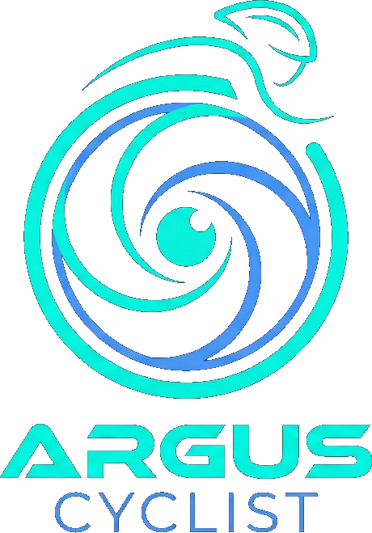
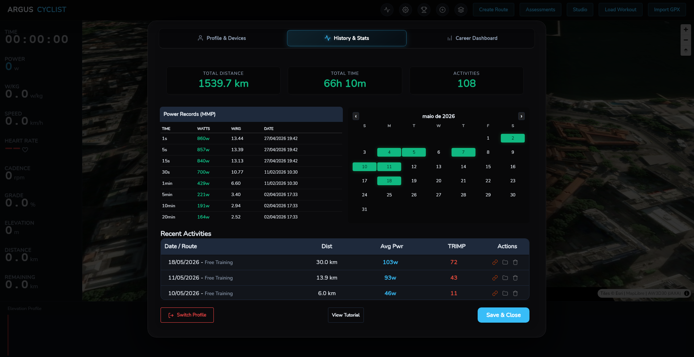

Trabalho de Conclusão de Curso · Ciência da Computação
Argus Cyclist
Um ecossistema multiplataforma e de código aberto para o ciclismo virtual
Paulo Sérgio Silva de Medeiros
Orientador: Prof. Dr. Isaac de Lima Oliveira Filho
Mossoró/RN · 19 de novembro de 2026


Uma pedalada real · 27/04/2026
Uma hora nas colinas de Girona, sem sair de Mossoró
■ altitude do percurso (GPX)
■ potência do ciclista
■ frequência cardíaca
Como transformar esta pedalada em números confiáveis — e saber o que cada número significa?
Contexto
O que é ciclismo virtual
Potência · W
Quanto trabalho o ciclista produz. É a grandeza central do treino.
Frequência cardíaca · bpm
Como o corpo responde a esse trabalho.
Cadência · rpm
Ritmo das pedaladas.
Inclinação · %
Vem do mapa do percurso; o rolo endurece na subida.
Problema
O fluxo do ciclista é fragmentado
Contexto perdido
cada troca de app separa o percurso do dado
Custo e conta
assinaturas em dólar/euro: US$ 19,99/mês (Zwift), € 19,99/mês (Rouvy)
Caixa-preta
métricas como TSS e PMC sem fórmula ou parâmetro explícitos
Preços de referência consultados em out/2026 nas páginas oficiais (Cap. 2).
Estado da arte
As peças existem — a combinação, não
| Plataforma | GPX do usuário | Controla o rolo | Análise fisiológica | Histórico local | Código aberto |
|---|
| Zwift | | | | | |
| Rouvy | | | | | |
| Biketerra | | | | | |
| TrainingPeaks Virtual | | | | | |
| GoldenCheetah | | | | | |
| Incyclist | | | | | |
| Argus Cyclist | | | | | |
Contribuição: integração e transparência — não pioneirismo em cada função.
● atende · ◐ parcial · ○ não é o foco — leitura do autor a partir de páginas oficiais e repositórios (out/2026), Cap. 2.
Proposta
Um fluxo, três usos
Reconhecimento
Ensaiar o percurso de uma prova antes de ir.
Exploração
Pedalar um lugar que talvez nunca visite.
Treino
Treinar com carga fisiológica mensurável.
Código aberto (GPLv3) · dados no dispositivo · integrações (Strava, Intervals.icu) opcionais
Metodologia
Design Science Research
3 ciclos iterativos · jan–out/2026
305 commits · núcleo e INPI → análise e treino → Android e IA local
Registro no INPI · 20/01/2026
Processo BR512026003786-7 · linha de base do artefato
Avaliação piloto
Próprio autor, rolo e sensores reais · sem inferência estatística
Peffers et al. (2007); Hevner et al. (2004).
Arquitetura
Núcleo em Go, interface web compartilhada
Tempo real
Da notificação Bluetooth ao número na tela
Mapa suaviza a câmera a cada 150 ms: fluidez da tela ≠ taxa de aquisição.
Simulação · caso Geraardsbergen–Leberg
Do GPX à resistência do rolo
Entre pontos vizinhos: rampas de até 17,9% e muito ruído.
Janela de ±5 pontos e limite de ±25%: a curva que vai para o rolo.
Equação de Martin (quase estática), resolvida por bisseção:
η·P = ½ρCdA·v³ + m·g·(Crrcosθ + sinθ)·v
Velocidade a 200 W, 84 kg · mesmas constantes e algoritmo do motor Go
Martin et al. (1998). Velocidade e distância são estimadas pelo modelo; a potência é medida.
Fisiologia · sessão de Girona
Cada número com fórmula — e com limite
| Potência média | 96 W | medido |
| NP (média⁴ de 30 s) | 106 W | calculado |
| IF · TSS (FTP 153 W) | 0,69 · 49 | calculado |
| FC média · máx | 139 · 169 | medido |
| Desacoplamento (Pw:FC) | 8,3% | calculado |
| Recuperação da FC (1 · 2 min) | 26 · 28 | calculado |
| VT1 / VT2 | — | anotação |
Limiares são marcados pelo usuário; o teste de 5 min é proxy de potência aeróbia, não mede VO₂máx; zonas de FC por % da máxima.
Coggan & Allen (2010); Banister (1991). Sessão em modo ERG (potência-alvo fixa); valores reprocessados a 1 Hz.
Avaliação piloto · jan–out/2026
Dez meses de uso real
2.182 km
distância virtual
PMC (CTL/ATL/TSB) reconstruído com as constantes do sistema (42 e 7 dias) a partir do banco local do autor.
Avaliação → nova iteração
A análise dos dados encontrou defeitos
Amostragem
Cada sensor notifica sozinho: 2,95 amostras/s, mas as métricas contavam amostra = segundo.
Exportação FIT
~80 campos gravados como zero “válido”: leitores padrão viam altitude de −500 m.
Correção
Reamostragem a 1 Hz, mensagens FIT sem campos espúrios e testes automatizados (13 → 27).
NP de Girona
138→106 W
sessões com desacoplamento
55→25
Aceito pelo Strava ≠ correto. Fórmula explícita = erro detectável.
Identificado após a entrega do texto; 82 arquivos FIT reprocessados sem alterar o banco (scripts/recalcular).
Funcionalidades
Além do simulador

Sessão no mapa 3Drota colorida por inclinação · treinos ZWO e testes de FTP

Eventossprint · KOM · contrarrelógio

CarreiraPMC e desacoplamento

Desgaste de componentescorrente · pneus · cassete

GamificaçãoXP · níveis · metas
● IA local (Ollama) gera treinos ZWO
● Recuperação de sessão após falha
● Multiperfil · Strava · Intervals.icu
Resultados
Requisitos e plataformas
| Requisito | Status |
|---|
| RF01 · importar GPX e derivar inclinação | verificado |
| RF02 · controlar o rolo pela inclinação | verificado |
| RF03 · registrar potência, FC e cadência | verificado |
| RF04 · NP, IF, TSS, TRIMP, PMC, HRR, Pw:FC | implementado · sem validação clínica |
| RF05 · histórico local por perfil | verificado |
| RF06 · exportar FIT e integrações | verificado em amostra |
| RF07 · desktop e Android | verificado |
| RF08 · fluxo de reconhecimento | demonstrado |
| Plataforma | Situação |
|---|
| Windows · Linux | fluxo completo |
| Android (telefone) | sessão ao vivo |
| macOS | compilável · não validado |
| iOS · tablet | preparado · não validado |
GPLv3
código aberto · INPI
Conclusão
O fluxo funciona — e é auditável
Contribuições
Artefato aberto que integra percurso, simulação, fisiologia e histórico local · fórmulas documentadas · processo rastreável
Limitações
Piloto com um participante · sem validação clínica · Android sem FIT/histórico · mapa depende de rede
Trabalhos futuros
Reconhecimento automático e pacing · estudo de usabilidade · núcleo único (WebAssembly) · mapas offline
Obrigado.
Após a arguição: demonstração com o rolo e os sensores.
github.com/SoNdA11/argus-cyclist
INPI BR512026003786-7
APÊNDICE
Para a arguição
Slides de apoio
↓ protocolos · desktop × Android · escolha de stack · métricas · testes
APÊNDICE
FTMS × FE-C sobre BLE
| FTMS | FE-C sobre BLE |
|---|
| Origem | padrão Bluetooth SIG | perfil ANT+ em serviço proprietário |
| Controle | ponto 0x2AD9 · opcodes 0x03 / 0x05 | páginas 49 (ERG) e 51 (inclinação) |
| No Argus | desktop | desktop e Android |
| Limite | sem leitura da confirmação do rolo | não é ANT+ nativo; peso fixo 75+10 kg |
A4 09 4F 05 33 FF FF FF FF (inclinação+200)/0,01 Crr XOR
APÊNDICE
Desktop × Android
| Desktop (Go) | Android (JavaScript) |
|---|
| Solução da física | bisseção, 0–40 m/s | Newton–Raphson, 10 iterações |
| Crr · η | 0,005 · 0,96 | 0,004 · 0,97 |
| Distância GPX | 3D (com elevação) | horizontal (Haversine) |
| Suavização | ±5 pontos, limite ±25% | ±2 pontos, sem limite |
| FIT · histórico | sim | não |
Por quê: o Capacitor não executa Go. Futuro: núcleo único via WebAssembly.
APÊNDICE
Por que Go + Wails?
Wails
Reaproveita a interface web; ponte direta com o núcleo Go; um executável; WebView do sistema.
Electron
Embutiria Node + Chromium; núcleo BLE teria de ir para JS ou processo à parte.
Tauri
WebView + Rust; exigiria reescrever o núcleo Go existente.
Decisão de adequação ao código existente — não foi feito benchmark de memória ou tamanho.
APÊNDICE
Fórmulas e ressalvas
| NP | (média(p̄30s⁴))¼ | picos pesam mais |
| TSS | t·NP·IF / (FTP·3600) ·100 | 1 h no FTP = 100 |
| TRIMP | tmin·r·0,64·e1,92r | coeficiente masculino, sem individualização |
| PMC | CTL ← 42 d · ATL ← 7 d | tendência, não preditor |
| HRR | FCfinal − FC60 s / 120 s | referência é a última FC, não o pico |
| Zonas FC | % da FC máxima | LTHR/Karvonen não usados |
| FTP | rampa ·0,75 · 20 min ·0,95 · 5 min ·0,80 | convenções internas |
APÊNDICE
Testes automatizados (27)
| Pacote | Nº | Verifica |
|---|
| fit · métricas | 7 | NP, IF, TSS, zonas, TRIMP, desacoplamento, PMC |
| fit · reamostragem | 3 | média por segundo, lacunas, FC zerada |
| fit · arquivo | 2 | duração pelos registros; ida e volta com expansão de componentes |
| sim | 2 | velocidade satisfaz Martin; monotonicidade |
| workout | 1 | passos ZWO e FreeRide |
| recovery + e2e | 12 | snapshots, corrupção parcial, recuperação ponta a ponta |
APÊNDICE
Telas
